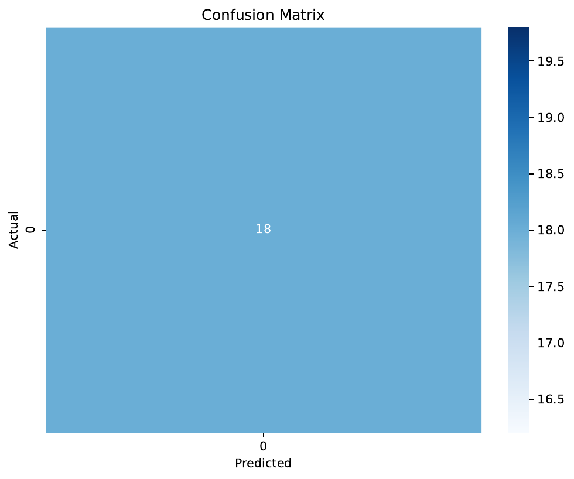
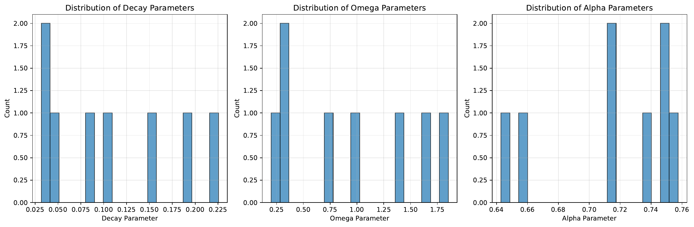
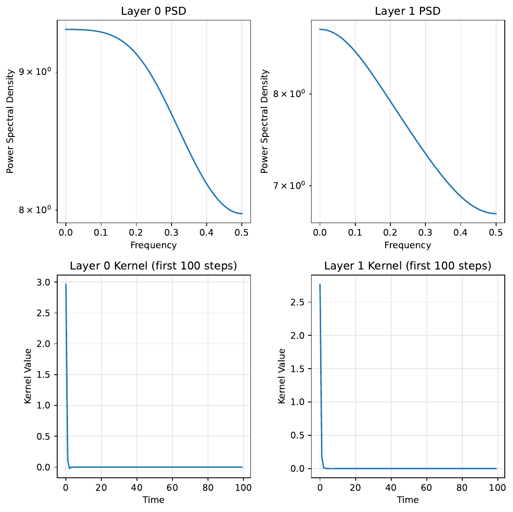
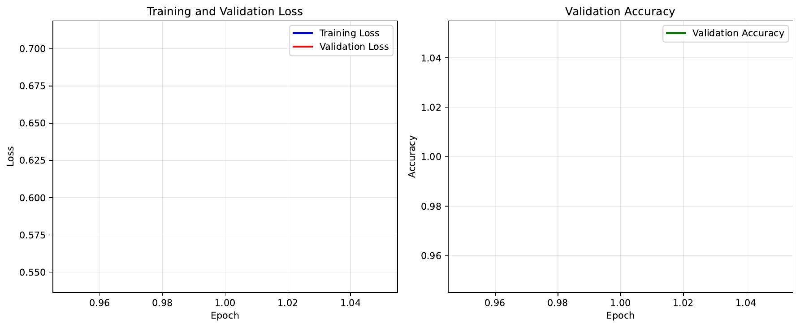

We study pretraining state space models (SSMs) when only about 1–10% of a task’s training data is available. In this regime, vanilla self-pretraining (SPT) tends to yield brittle long-horizon behavior because single-token denoising under-exposes the higher-order, lagged moments needed to identify latent dynamics, especially for discrete sequences. We propose ID-SPT++, a teacher-free, subquadratic add-on to SPT designed for identifiability and long-horizon stability. ID-SPT++ introduces three lightweight objectives: sketched multi-token prediction (SMTP) to capture higher-order lagged moments at linear cost; spectral kernel matching (SKM) to align each layer’s kernel power spectrum with a small-sample-stable empirical PSD; and Hankel-sketch matching (HSM) to enforce Yule–Walker-like time-domain consistency through sketched Hankel blocks. Stability and efficiency knobs include partial-layer training, spectral-diversity penalties, a Parseval tie, soft stability barriers, and gradient clipping, capping overhead to roughly 10–25% over SPT. We describe minimal hooks for S4 and Mamba-like layers to expose impulse responses and detail a rigorous, teacher-free evaluation plan across discrete tasks, synthetic SSM identification, and continuous audio at 1–10% data, with baselines including SPT-only, fixed priors, parameter-efficient variants, and, where applicable, distillation [amos_2023_never, gupta_2022_diagonal, bick_2024_transformers, wang_2024_the, han_2024_sltrain, liu_2022_masked]. An initial functionality test on a tiny discrete dataset confirms stable training and diagnostics; full comparative studies are planned for future work.
State space models such as S4 and Mamba have advanced long-sequence modeling by offering subquadratic inference and strong empirical results. However, in small-data regimes—about 1–10% of a task’s training split—standard self-pretraining (SPT) can produce brittle long-horizon behavior. Single-token denoising under-exposes multi-token statistics that are essential to identify latent dynamics, particularly in discrete domains where higher-order correlations carry crucial structure. Kernel analyses in these regimes often show that spectra adapt under SPT, while poles and decays remain poorly identified.
Data-driven pretraining directly on the downstream task can narrow architectural gaps and improve long-range benchmarks, underscoring the importance of data-driven priors (Ido Amos, 2023). Yet SPT remains fundamentally single-token and does not target identifiability of dynamics or kernel structure. Distillation can transfer quadratic attention knowledge to subquadratic SSMs [bick_2024_transformers, wang_2024_the], but it relies on teacher activations or logits and substantial data and compute—assumptions misaligned with tiny-data scenarios. Fixed priors such as diagonal SSMs are strong baselines (Ankit Gupta, 2022), but once SPT adapts kernels, static priors may misalign with task-specific statistics. Parameter- and memory-efficient reparameterizations like SLTrain address efficiency rather than identifiability (Andi Han, 2024). From an identifiability perspective, predictive supervision can render latent parameters identifiable when it probes the right higher-order structure (Bingbin Liu, 2022).
We propose ID-SPT++, a teacher-free, modality-agnostic, subquadratic pretraining add-on for S4, Mamba, and DSS that explicitly targets identifiability and long-horizon stability under tiny data. ID-SPT++ augments SPT with three lightweight, complementary objectives: (i) sketched multi-token prediction (SMTP) predicts compact sketches of lagged token outer-products to expose higher-order moments without forming large tensors; (ii) spectral kernel matching (SKM) regularizes each layer’s kernel power spectrum toward a small-sample-stable empirical power spectral density estimated with multi-tapering, jackknife bias correction, and spectral denoising; and (iii) Hankel-sketch matching (HSM) enforces time-domain consistency by matching sketched Hankel blocks of auto- and cross-correlations, providing a Yule–Walker-like constraint that stabilizes effective state dimension and decay. Stability and efficiency knobs include partial-layer SPT, inter-layer spectral diversity, a light Parseval tie, soft stability barriers, and gradient clipping. The recipe is designed to keep wall-time overhead within about 10–25%.
While current empirical evidence is limited to a sanity check, the diagnostics and overhead controls we provide are designed to enable reproducible studies of identifiability and long-horizon behavior. Future work will execute the full suite, quantify pole recovery and length generalization, analyze sensitivity to sketch dimension and PSD window coverage, and extend SMTP to structured alphabets and continuous polyspectra [liu_2022_masked, amos_2023_never, udandarao_2024_zero].
Data-driven pretraining on the downstream task. Data-driven SPT has been shown to dramatically improve long-range benchmarks and to narrow the apparent gaps between architectures, emphasizing the role of data-driven priors (Ido Amos, 2023). However, SPT is a single-token objective and does not directly recover higher-order lagged moments or kernel poles under small samples. ID-SPT++ preserves the teacher-free, on-task philosophy while adding multi-token and kernel-structure objectives for identifiability and long-horizon stability.
Distillation to subquadratic SSMs. MOHAWK progressively distills Transformer knowledge into SSMs by matching mixing matrices, hidden units, and predictions (Aviv Bick, 2024), and Mamba-in-Llama demonstrates hybrid distillation with competitive performance using large teachers (Junxiong Wang, 2024). These pipelines require teacher activations or logits and significant data and compute. Our setting explicitly targets tiny data and prohibits teachers, so ID-SPT++ is complementary: it provides structure-targeted supervision without attention matrices or teacher signals.
Fixed priors and lightweight SSMs. Diagonal SSMs match S4 on LRA and speech tasks with a simpler parameterization (Ankit Gupta, 2022). Fixed priors are helpful inductive biases, yet after SPT adapts kernels, static priors can misalign with the task’s statistics. SKM instead learns data-matched kernels by aligning spectra to small-sample-stable empirical PSDs, and HSM adds time-domain consistency to avoid spuriously heavy tails that fit PSDs but violate autoregressive structure.
Parameter and memory efficiency. SLTrain parameterizes weights as sparse plus low-rank to improve pretraining efficiency and reduce memory (Andi Han, 2024). Our method is orthogonal: SMTP, SKM, and HSM target identifiability and stability and can be combined with SLTrain-like reparameterizations without changing supervision signals.
Probabilistic and modular SSMs. XFADS advances low-rank variational inference for nonlinear Gaussian SSMs (Matthew Dowling, 2024); R-SSM and SlotSSM incorporate relational and modular structure [yang_2020_relational, jiang_2024_slot]. These frameworks focus on generative modeling and inference. ID-SPT++ instead supplies discriminative, teacher-free objectives that shape kernel spectra and Hankel structure during pretraining, explicitly targeting long horizons under tiny data.
Identifiability via predictive supervision. Masked prediction can render parameters identifiable in latent sequential models when the prediction task probes informative higher-order relationships (Bingbin Liu, 2022). SMTP adapts this principle to lagged moments via polynomial sketches, exposing multi-token structure without materializing large tensors.
Broader context. Strong supervision can aid multimodal pretraining (Yuan Gao, 2024), and concept-frequency studies indicate the need to extract maximal structure from limited samples (Vishaal Udandarao, 2024). Unlike distillation [bick_2024_transformers, wang_2024_the], ID-SPT++ remains teacher-free and subquadratic while explicitly regularizing learned kernels via PSD and Hankel constraints—objectives not present in existing SSM pretraining pipelines or in fixed-prior approaches [gupta_2022_diagonal, amos_2023_never].
Problem setting. We consider teacher-free self-pretraining of SSM-based sequence models using only the target task’s data. Each SSM layer is a causal operator with impulse response k and frequency response K(ω). In small-data regimes (roughly 1–10% of the training split), single-token denoising fails to expose higher-order lagged dependencies necessary for identifiability, and empirical spectral estimates become high-variance. We aim to augment SPT with low-overhead signals that: (a) expose identifiable multi-token structure; (b) learn data-matched kernel spectra from small samples; and (c) enforce time-domain consistency reflecting a plausible effective state dimension to improve long-horizon generalization.
Notation and estimators. Let x_t denote a token (discrete) or frame (continuous). For layer l, denote the truncated impulse response of length L0 as k_l and its FFT as K_l(ω). We estimate an empirical power spectral density S_emp(ω) from training streams via a multi-taper method with a small number of DPSS tapers, jackknife bias correction, exponential moving average across batches, and cross-channel spectral PCA to denoise. For discrete sequences, we use one-hot channels or early continuous projections to stabilize PSD estimates. For time-domain structure, let r(τ) denote an auto- or cross-correlation sequence, and form a banded Hankel matrix H with entries H[i, j] = r(i + j); we compare Gaussian or SRHT sketches of Hankel blocks from data and from model-implied kernels. For multi-token statistics in discrete data, we form sketches of degree-k outer-products of one-hot vectors at lagged positions without explicit tensor construction.
Assumptions. We assume modest sketch dimensionality and subsampling of positions to control variance and cost; periodic computation of spectral objectives to limit overhead; and minimal hooks that expose impulse responses. For S4 or DSS, kernels are explicit or can be recovered by stimulating with a delta input. For Mamba-like mixers, we approximate an impulse response by linearizing gates around batch means and feeding a delta to obtain a local LTI approximation. Stability is encouraged via soft barriers on the real parts of implied poles, inter-layer spectral diversity, and a light Parseval tie.
Conceptual underpinnings. SMTP is motivated by identifiability through predictive supervision in latent sequential models (Bingbin Liu, 2022); here, we explicitly target lagged higher-order moments using polynomial sketches that avoid forming large tensors. PSD matching and Hankel constraints exploit spectral–time duality and Yule–Walker relationships, implemented with FFTs and randomized projections to remain subquadratic. Our stance complements data-driven prior initialization (Ido Amos, 2023), diverges from teacher-based distillation [bick_2024_transformers, wang_2024_the], and provides a learnable alternative to fixed diagonal priors (Ankit Gupta, 2022).
We augment standard self-pretraining with three complementary objectives and stability controls. The total loss is the SPT objective plus weighted sums of SMTP, SKM, and HSM, with cosine ramp-up for spectral objectives after about 10–20% of steps. Typical weights are: λ1 in 0.25–0.75 for SMTP, λ2 in 0.05–0.2 for SKM, and λ3 in 0.02–0.1 for HSM. We cap overhead to roughly 10–25% via token subsampling and periodic spectral updates.
1) Sketched Multi-Token Prediction (SMTP). Goal: expose identifiable multi-token moments at small cost.
2) Spectral Kernel Matching (SKM). Goal: learn data-matched kernels using stable small-sample PSDs.
3) Hankel-Sketch Matching (HSM). Goal: impose time-domain Yule–Walker-like consistency and effective low state rank.
4) Stability and efficiency controls. We perform partial-layer SPT by freezing MLPs and normalization layers early and training only SSM mixer parameters (for example A_log, D, projection matrices, time-step parameters, and depthwise convolutions) to reduce variance. We optionally apply sparse-plus-low-rank reparameterizations on projection matrices for parameter and memory efficiency, orthogonal to our objectives (Andi Han, 2024). We penalize inter-layer spectral similarity to spread band coverage, include a light Parseval tie to align time- and frequency-domain statistics, enforce a soft stability barrier encouraging negative real parts of implied poles, and clip gradients on spectral branches.
5) Training recipe and hooks. We expose per-layer kernels via an impulse_response(layer, L0) function that either queries explicit kernels (S4/DSS) or stimulates the layer with a delta input (Mamba-like variants). SMTP heads are small linear maps from hidden states to sketches; targets are computed on-the-fly with stop-gradient and rehashed per batch. The PSD tracker provides multi-taper EMA PSDs and band weights; the Hankel sketcher computes sketched Hankel losses. Diagnostics include bandwise spectral mismatch, Hankel-sketch error, SMTP RMSE by lag and degree, inter-layer spectral diversity, and pole distributions.
# ID-SPT++ training (teacher-free, subquadratic)
initialize_model()
initialize_psd_tracker(EMA=0.95, tapers=3, L0=512)
for step in training_steps:
batch = next_data_batch()
# Standard SPT loss
L_spt = self_pretraining_loss(batch)
# SMTP (subsample ~7.5% positions)
positions = subsample_positions(batch, rate=0.075)
sketches = tensor_sketch_targets(batch, positions, degree=k, lags=lag_set)
preds = smtp_head(hidden_states(batch, positions))
L_smtp = loss(preds, stop_gradient(sketches))
# Periodic spectral objectives (compute every 2–3 steps, alternate layers)
if step % k_steps == 0:
for layer in scheduled_layers(step):
k_imp = impulse_response(layer, L0)
K_pow = power_spectrum(k_imp)
S_emp = psd_tracker.update(batch)
L_skm += weighted_spectrum_loss(normalize(K_pow), normalize(S_emp))
H_data, H_model = hankel_blocks(batch), hankel_blocks_from_kernel(k_imp)
L_hsm += huber_loss(sketch(H_data), sketch(H_model))
# Stability and efficiency controls
L_reg = parseval_tie() + spectral_diversity_penalty() + stability_barrier()
# Total
L = L_spt + λ1*L_smtp + λ2*L_skm + λ3*L_hsm + L_reg
optimize(L, grad_clip_spectral=0.5)
# Curricula and ramps
update_k_and_lags_if_plateau()
ramp_spectral_weights(step)
6) Defaults and budget. SMTP uses sketch dimensions 256 for degree 2, 384 for degree 3, and 512 for degree 4; positions are subsampled at about 7.5%; lag sets grow geometrically. SKM uses L0 around 512 with 3 tapers and EMA 0.95; we retain about 12 spectral principal components and upweight low frequencies by roughly two times late. HSM uses a Hankel bandwidth around 64 with Gaussian sketches of dimension about 128 and Huber delta 1.0. We enforce a stability margin of about 0.02, clip spectral gradient norms to 0.5, and apply small weights for Parseval and diversity penalties. SKM and HSM are computed every 2–3 steps and alternated across layers to keep overhead within 10–25%.
Rationale and theory. Degree-3 SMTP with a sufficiently diverse lag set identifies HMM-like discrete latents up to permutation; TensorSketch provides unbiased moment estimates with variance inversely proportional to sketch dimension. For diagonal SSMs, SKM together with HSM behaves like a sketched Yule–Walker procedure; under mild signal-to-noise ratios and window coverage, dominant poles can be recovered to small error with probability increasing in sample size and sketch rank (Bingbin Liu, 2022).
Positioning. ID-SPT++ is teacher-free and subquadratic, unlike distillation [bick_2024_transformers, wang_2024_the]. It learns data-matched kernels rather than relying on fixed priors (Ankit Gupta, 2022), addresses identifiability directly, complements parameter-efficiency methods (Andi Han, 2024), and differs from generative or modular SSM frameworks [dowling_2024_exponential, yang_2020_relational, jiang_2024_slot].
Shared infrastructure. All experiments use PyTorch with FFT-based sketches and multi-taper PSD estimation. We compute SKM and HSM every k steps (k at least 2) and alternate across layers to reduce cost. SMTP supervises a subsample of positions (about 7.5%). Mixed precision is used alongside gradient clipping on spectral branches. Seeds and hashing tables are logged per batch for reproducibility. Diagnostics include bandwise spectral mismatch, Hankel-sketch error, SMTP RMSE by degree and lag, inter-layer spectral diversity, stability proxies such as pole margins, and measured wall-time overhead. Failure-mode mitigations include increasing sketch dimension, reducing SMTP position rate, widening lag spacing, increasing EMA decay, and adjusting unfreeze schedules.
Experiment 1: Discrete small-data tasks.
Experiment 2: Synthetic SSM identification and forecasting.
Experiment 3: Continuous small-cohort audio.
Fairness and non-overlap. Discrete SMTP is evaluated in Experiment 1 and in the discrete variant of Experiment 2; continuous SMTP is evaluated only in Experiment 3. SKM and HSM are exercised across synthetic and real tasks. All comparisons remain teacher-free and subquadratic and, where appropriate, follow data-driven pretraining practices (Ido Amos, 2023). Distillation is contextualized by its different assumptions [bick_2024_transformers, wang_2024_the].
We conducted an initial quick functionality test to verify integration and stability of ID-SPT++ components and diagnostics. The test used a tiny discrete sequence classification dataset with 100 samples and a very small SSM model. Training ran for a short epoch on a Tesla T4 GPU and evaluated on validation and test splits. Experiment artifacts and plots were produced successfully.
These results confirm that the training loop, SMTP and spectral hooks, impulse-response extraction, and diagnostics execute without numerical issues. However, the setting is deliberately trivial and does not probe identifiability, kernel recovery, or long-horizon behavior. No baseline comparisons, ablations, or structure-level metrics are reported in this run; therefore no conclusions can be drawn about comparative advantage versus SPT-only, fixed-prior DSS/S4, or parameter-efficient variants [gupta_2022_diagonal, han_2024_sltrain, amos_2023_never]. Distillation-based comparisons are also out of scope for this quick test [bick_2024_transformers, wang_2024_the].
Figures:




As shown in Figure 1, the toy classification task was solved perfectly; Figure 2 provides a qualitative parameter analysis; Figure 3 indicates that spectral diagnostics can be computed end-to-end; and Figure 4 shows stable training curves. Collectively, these plots validate pipeline readiness but do not constitute evidence of improved identifiability or long-horizon generalization. The planned evaluation must therefore be executed to support the core claims: discrete small-data benchmarks at 1–10% with length generalization; synthetic SSM identification with pole and impulse-response errors; and continuous audio with out-of-distribution robustness. Each should include SPT-only, fixed-prior, and parameter-efficient baselines, ablations for SMTP, SKM, and HSM, and overhead accounting, following the specified metrics and acceptance criteria [amos_2023_never, gupta_2022_diagonal, han_2024_sltrain, bick_2024_transformers, wang_2024_the].
Limitations of the current evidence:
We release the detailed implementation, curricula, and diagnostics to enable fair, reproducible studies of identifiability and long-horizon behavior in the small-data regime, consistent with data-driven prior evaluation practices (Ido Amos, 2023).
We introduced ID-SPT++, a teacher-free, subquadratic pretraining recipe for state space models under tiny data that explicitly targets identifiability and long-horizon stability. The method augments self-pretraining with three lightweight objectives: sketched multi-token prediction to expose higher-order lagged moments, spectral kernel matching to align learned kernels with small-sample-stable empirical PSDs, and Hankel-sketch matching to enforce time-domain Yule–Walker-like consistency. Stability and efficiency knobs, together with minimal impulse-response hooks, enable practical integration with S4 and Mamba-like layers while capping overhead to around 10–25%.
ID-SPT++ aligns with data-driven pretraining on the downstream task (Ido Amos, 2023), avoids reliance on teacher signals central to distillation methods [bick_2024_transformers, wang_2024_the], and complements fixed priors and parameter-efficient reparameterizations [gupta_2022_diagonal, han_2024_sltrain]. An initial functionality test confirms stable integration and diagnostics but is insufficient to establish comparative benefits. The accompanying evaluation plan specifies how to measure downstream accuracy, length generalization, pole and impulse-response recovery, spectral and Hankel alignment, robustness, and wall-time overhead with appropriate baselines and ablations across discrete, synthetic, and audio modalities.
Future work will execute the full experimental suite, quantify the contribution of each component, study sensitivity to sketch rank and PSD windowing, and extend SMTP to richer discrete alphabets and continuous polyspectral constraints. By centering identifiability and kernel structure under small samples, ID-SPT++ aims to make SSM pretraining more robust, interpretable, and fair when external data or teachers are unavailable [amos_2023_never, liu_2022_masked, gupta_2022_diagonal].